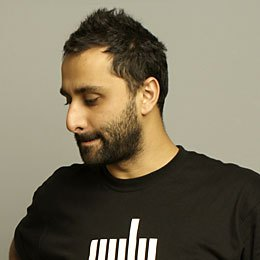

October 19-22, 2017
Brooklyn, NY
Burak Arıkan

Burak Arikan is a New York and Istanbul based artist working with complex networks. He takes the obvious social, economic, and political issues as input and runs through an abstract machinery, which generates network maps and algorithmic interfaces, results in performances, and procreates predictions to render inherent power relationships visible and discussable. Arikan’s software, prints, installations, and performances have been featured in numerous exhibitions internationally. Arikan is the founding member of Graph Commons, a collaborative platform for network mapping, analysis, and publishing.
Presenting
Data Asymmetry: Interrogating How Power Accumulates in Complex Networks
“Big data” is the term used to define the perpetual and massive data gathering by corporations and governments on consumers and citizens. When the subject of data is not individuals, but governments and companies themselves, we call it civic data. Increasingly, a new generation of initiatives is generating structured data on societal issues from human rights violations, to Internet governance policies, from labor crimes to climate justice. These civic data initiatives diverge from the traditional civil society organizations in their outcomes: they don’t just publish reports, but also provide access to their research as a database. However, although many of the issues are interrelated, the data of the separate initiatives are rarely used in relation to one another. In this talk, I will discuss and speculate on ways and challenges of building civic data solidarity networks against the increasingly big-data driven hegemony.
Further Reading
Workshop with Zeyno Ustun
Creative and Critical Use of Complex Networks
The workshop asks how to map complex networks, how to read those networks with methods such as graph analysis, and also includes practice-based work sketching diagrams, drawing graphs, and more. As a workshop participant, you gain creative skills to answer your complex data questions, which would then inform your decisions. Workshop participants use the Graph Commons platform for collaborative mapping and analysis. View the past participants' work from the workshop archive.
Workshop Requirements
Each participant should bring a laptop.